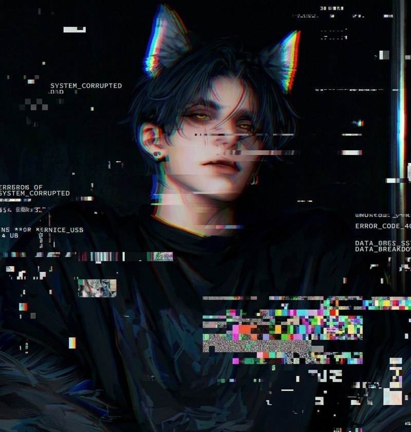

MICROCOT // TERMINAL

Пресет
[ github.com/aimicrocot ]
Промтинг гайд
[ RP Guide SillyTavern ]
Расширение: Токены
[ Tokens-Count ]
Расширение: Сценарии
[ Scenarios-Extension ]
Memory Tracker
[ Facts-Memory-Tracker ]